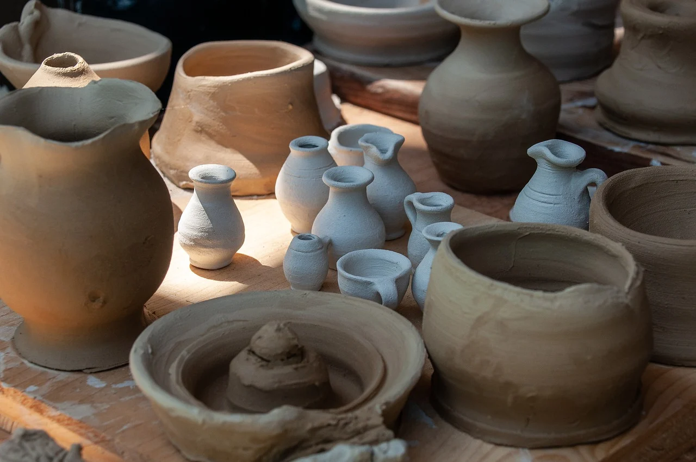
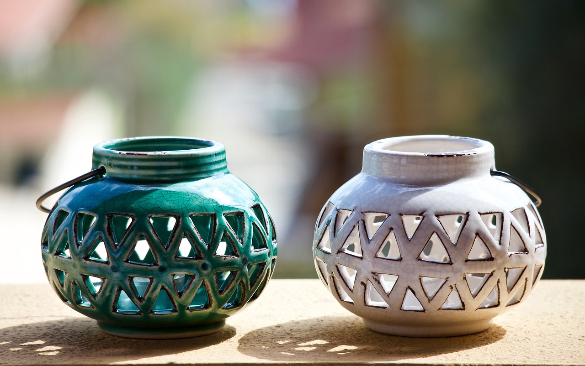

Gallery




Discover the timeless art and craft of pottery, where clay transforms into beautiful creations through shaping, molding, and firing techniques. Pottery has been an integral part of human culture for thousands of years.
The primary material in pottery is clay, which comes in several types: earthenware, stoneware, and porcelain. Each type has unique properties, including differences in firing temperature, porosity, and durability. Potters use various techniques to shape their creations, including hand-building methods like coiling, pinching, and slab construction. Additionally, wheel-throwing, where clay is spun on a potter's wheel, allows for the creation of symmetrical and uniform pieces, making it a popular method for producing functional items like bowls and vases.
The pottery-making process involves several steps, beginning with the preparation of the clay, which must be wedged to remove air bubbles and ensure a consistent texture. After shaping the piece, it is left to dry until it reaches a leather-hard state, suitable for carving or adding handles and other details. The next stage is bisque firing, where the pottery is fired at a lower temperature to harden it. This is followed by glazing, which adds color and a glassy finish, and then a final high-temperature firing to achieve the finished product. Pottery combines artistic expression with practical skills, making it a unique and enduring craft.
Pottery, one of humanity's earliest inventions, emerged around 20,000 years ago, with some of the oldest known pieces discovered in China. As humans transitioned from nomadic lifestyles to settled agricultural communities during the Neolithic Revolution around 10,000 years ago, the need for durable storage containers for food and water drove the invention and refinement of pottery. Early pottery was made using simple hand-building techniques such as pinching, coiling, and slab construction and was fired in open fires or pit kilns.
The invention of the potter's wheel around 4,000 BCE in Mesopotamia marked a significant advancement, allowing for faster and more precise shaping of vessels. This led to greater uniformity and complexity in pottery designs. Over time, specialized kilns were developed, enabling higher and more consistent firing temperatures, resulting in more durable pottery.
Pottery also held cultural and ritual significance, with different civilizations using it for artistic expression, religious ceremonies, and as status symbols. The styles and decorations of pottery often reflected the culture and beliefs of the people who made them. Today, pottery remains an essential tool for archaeologists, helping them understand ancient cultures, trade networks, technological advancements, and daily life through the study of pottery shards found in archaeological sites.
Pottery became known to other cultures through a mix of migration, trade, conquest, and cultural exchange. As human populations migrated and settled in new areas, they brought their pottery-making skills with them. Early human groups who had developed pottery techniques introduced these practices to new regions, facilitating the spread of pottery technology.
Trade networks played a crucial role in spreading pottery. As early civilizations began to trade goods, they exchanged not only finished pottery products but also the knowledge and techniques required to make them. Pottery items such as storage jars, cooking pots, and decorative pieces were often traded, spreading styles and methods across vast distances. When different cultures came into contact through trade, diplomacy, or other interactions, they often exchanged knowledge and technologies. Artisans from one culture might learn new techniques or styles from another, incorporating these elements into their own pottery traditions.
The expansion of empires and colonization of new territories also resulted in the transfer of technology and culture. Conquering armies and settlers brought their pottery-making skills to new regions, where local populations might adopt and adapt these techniques. Major ancient civilizations such as Mesopotamia, Egypt, China, Greece, and Rome had well-developed pottery traditions. These influential cultures often set standards for pottery styles and techniques that were emulated by neighboring regions. For example, Greek pottery styles influenced Etruscan and Roman pottery, while Chinese porcelain techniques spread to other parts of Asia and eventually Europe.
Archaeological discoveries have revealed the extensive reach of ancient pottery, showing how styles and techniques were shared and adapted across cultures. These findings provide evidence of the interconnectedness of ancient societies and the widespread dissemination of pottery-making knowledge. Through these various means, pottery-making spread across the globe, becoming a common and essential technology in many different cultures.